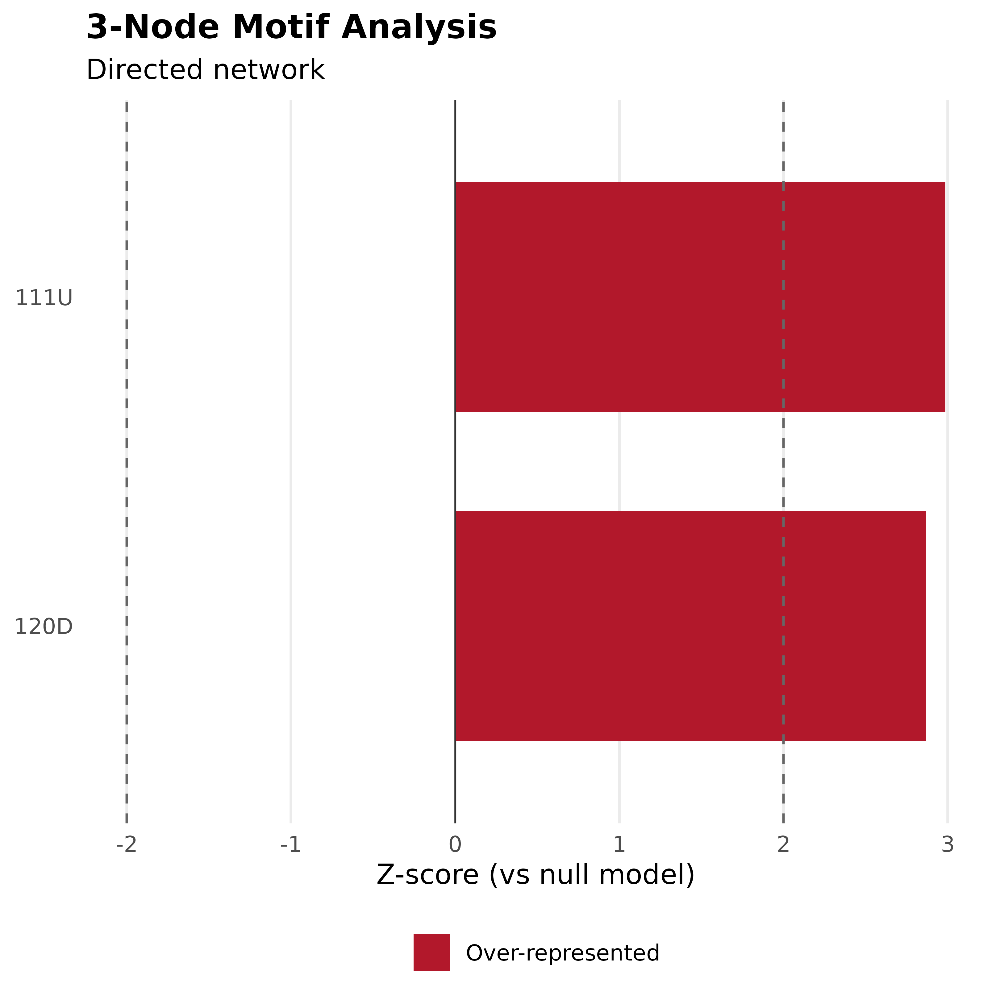

Analyze recurring subgraph patterns (motifs) in networks and test their statistical significance against null models.
Arguments
- x
A matrix, igraph object, or cograph_network
- size
Motif size: 3 (triads) or 4 (tetrads). Default 3.
- n_random
Number of random networks for null model. Default 100.
- method
Null model method: "configuration" (preserves degree) or "gnm" (preserves edge count). Default "configuration".
- directed
Logical. Treat as directed? Default auto-detected.
- seed
Random seed for reproducibility
Value
A cograph_motifs object containing:
counts: Motif counts in observed networknull_mean: Mean counts in random networksnull_sd: Standard deviation in random networksz_scores: Z-scores (observed - mean) / sdp_values: Two-tailed p-valuessignificant: Logical vector (|z| > 2)size: Motif size (3 or 4)directed: Whether network is directedn_random: Number of random networks used
See also
motifs() for the unified API, extract_motifs() for detailed
triad extraction, plot.cograph_motifs() for plotting
Other motifs:
extract_motifs(),
extract_triads(),
get_edge_list(),
motifs(),
plot.cograph_motif_analysis(),
plot.cograph_motifs(),
subgraphs(),
triad_census()
Examples
# Create a directed network
mat <- matrix(c(
0, 1, 1, 0,
0, 0, 1, 1,
0, 0, 0, 1,
1, 0, 0, 0
), 4, 4, byrow = TRUE)
# Analyze triadic motifs
m <- motif_census(mat)
print(m)
#> Network Motif Analysis
#> Size: 3-node motifs (directed)
#> Null model: configuration (n=100)
#>
#> Significant motifs:
#> motif count expected z p
#> 111U 2 0.2 3.16 0.0016
#> 120D 2 0.2 2.95 0.0032
#>
#> Over-represented: 2 | Under-represented: 0
plot(m)
